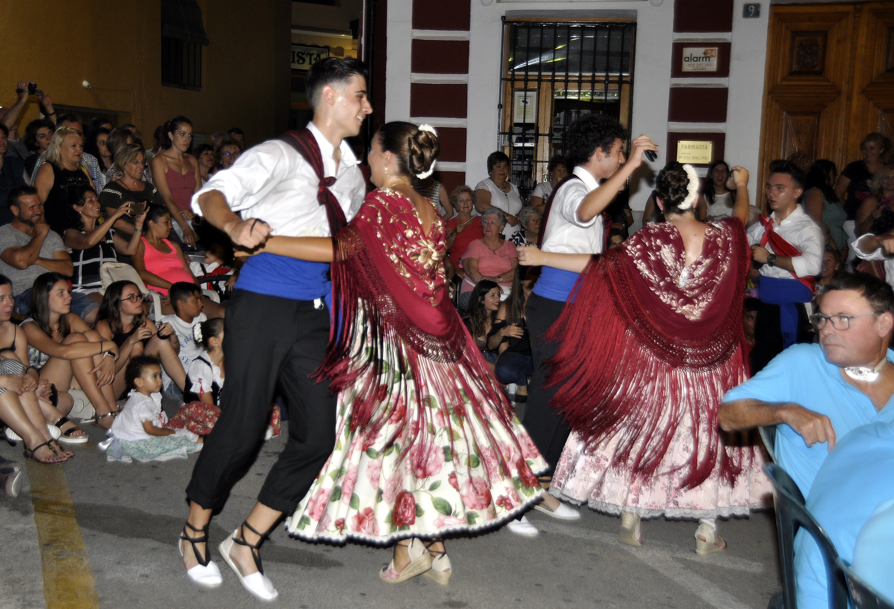

Daniel Buades
Músico, compositor e investigador musical interesado en la relación entre improvisación, patrimonio y creación contemporánea.
Un proyecto de creación musical que transforma el patrimonio sonoro valenciano en nuevas composiciones, improvisaciones y paisajes sonoros.

Este proyecto nace de la investigación de las danzas tradicionales de Callosa d'en Sarrià y de su potencial creativo dentro del lenguaje del jazz contemporáneo.
Melodías y patrones rítmicos procedentes de la tradición local son reinterpretados mediante la improvisación y la composición actual.
La tradición no es un museo. Es un punto de partida.
Músico, compositor e investigador musical interesado en la relación entre improvisación, patrimonio y creación contemporánea.
Dossier artístico, fotografías, vídeos promocionales y rider técnico.
contacto@danielbuades.com
www.danielbuades.com